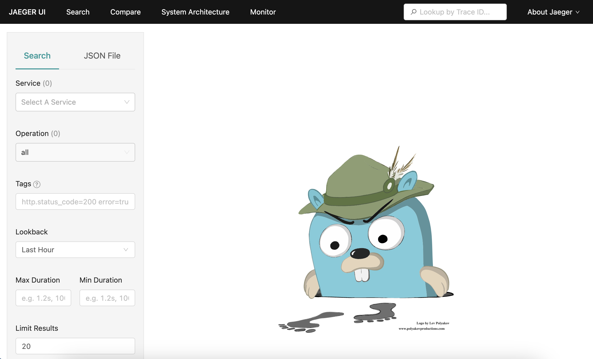

Programmatic - Rancher k3s prerequisites
This path swaps
podman run and podman play kube for a local Rancher
Desktop k3s cluster. Make sure you have Podman v5+
to build the image, plus Rancher Desktop
with the Kubernetes (k3s) engine enabled, and kubectl on your PATH.
Programmatic - Start Rancher Desktop
If Rancher Desktop is not already running from the previous lab, launch it now:
$ rdctl start
- Open the Rancher Desktop application
- In Preferences → Kubernetes, confirm "Enable Kubernetes" is checked (k3s)
- Also check Container Engine, confirm "containerd" is checked
- Wait for the status indicator in the bottom left to turn green and show "Kubernetes is running" - this can take a minute or two on first start
Programmatic - Verifying tooling installation
Before diving in, confirm your cluster is actually up and
kubectl is pointed at
it (note versions shown might differ for you):
$ kubectl config current-context
rancher-desktop
$ kubectl get nodes
NAME STATUS ROLES AGE VERSION
lima-rancher-desktop Ready control-plane,master 2d v1.36.2+k3s1
Now that you have the tooling, let's get started...
Finding Available Instrumentation Libraries
A quick way to find what OpenTelemetry instrumentation is available for your application is to
use opentelemetry-bootstrap!
Note: In a later lab from this workshop we'll explore another way by searching through the OpenTelemetry Registry
Note: In a later lab from this workshop we'll explore another way by searching through the OpenTelemetry Registry
Listing Available Instrumentation Libraries
Earlier we used opentelemetry-bootstrap to both detect and install libraries. By modifying the
command we can skip the installation and list available libraries instead.Try it out yourself and
verify the output below:
$ podman run -it hello-otel:auto opentelemetry-bootstrap -a requirements
opentelemetry-instrumentation-asyncio==0.65b0
opentelemetry-instrumentation-dbapi==0.65b0
opentelemetry-instrumentation-exceptions==0.65b0
opentelemetry-instrumentation-logging==0.65b0
opentelemetry-instrumentation-sqlite3==0.65b0
opentelemetry-instrumentation-threading==0.65b0
opentelemetry-instrumentation-urllib==0.65b0
opentelemetry-instrumentation-wsgi==0.65b0
opentelemetry-instrumentation-click==0.65b0
opentelemetry-instrumentation-flask==0.65b0
opentelemetry-instrumentation-grpc==0.65b0
opentelemetry-instrumentation-jinja2==0.65b0
opentelemetry-instrumentation-requests==0.65b0
opentelemetry-instrumentation-urllib3==0.65b0
Reviewing Available Instrumentation Libraries
There are several detected that are unnecessary because they instrument a Flask feature that
isn't used in the demo app like handling async requests, or instrumenting a very simple use case
like urllib3 which is used in a straightforward URL parsing function.
After removing the unneeded libraries from the list, here is what we need to install and configure:
After removing the unneeded libraries from the list, here is what we need to install and configure:
- opentelemetry-instrumentation-flask - traces web requests made to the application
- opentelemetry-instrumentation-jinja2 - traces the template loading, compilation and rendering
- opentelemetry-instrumentation-requests - traces HTTP requests made by the requests library
Programmatic - Installing the libraries
Open the file
programmatic/Buildfile-prog and add the lines shown to install
the API, SDK and the library instrumentation:
FROM python:3.13-bullseye
WORKDIR /app
COPY requirements.txt requirements.txt
RUN pip install -r requirements.txt
RUN pip install opentelemetry-api==1.44.0 \
opentelemetry-sdk==1.44.0 \
opentelemetry-instrumentation-flask==0.65b0 \
opentelemetry-instrumentation-jinja2==0.65b0 \
opentelemetry-instrumentation-requests==0.65b0
COPY . .
CMD [ "flask", "run", "--host=0.0.0.0"]
Programmatic - Configure SDK
To create, manage and export spans with OpenTelemetry there are 3 components to configure:
- Tracer Provider - constructor method that returns a tracer that creates, manages and sends spans
- Processor - hooks into ended spans, options to send spans as soon as they end or in a batch
- Exporter - responsible for sending spans to the configured destination
Programmatic - Import API, SDK
Open the file
programmatic/app.py and import the OpenTelemetry API and SDK:
import random
import re
import urllib3
import requests
from flask import Flask, render_template, request
from breeds import breeds
from opentelemetry.trace import set_tracer_provider
from opentelemetry.sdk.trace import TracerProvider
from opentelemetry.sdk.trace.export import SimpleSpanProcessor, ConsoleSpanExporter
Programmatic - Configure tracer
In the same file
programmatic/app.py a bit father down, create a
TracerProvider configured to send spans as they finish to the console:
...
from opentelemetry.sdk.trace.export import SimpleSpanProcessor, ConsoleSpanExporter
provider = TracerProvider()
processor = SimpleSpanProcessor(ConsoleSpanExporter())
provider.add_span_processor(processor)
set_tracer_provider(provider)
Programmatic - Import instrumentation libraries
Next we insert the imports needed for
flask, jinja2, and
requests instrumentation libraries above the section we just created:
import requests
from flask import Flask, render_template, request
from breeds import breeds
from opentelemetry.trace import set_tracer_provider
from opentelemetry.sdk.trace import TracerProvider
from opentelemetry.sdk.trace.export import SimpleSpanProcessor, ConsoleSpanExporter
from opentelemetry.instrumentation.flask import FlaskInstrumentor
from opentelemetry.instrumentation.jinja2 import Jinja2Instrumentor
from opentelemetry.instrumentation.requests import RequestsInstrumentor
provider = TracerProvider()
processor = SimpleSpanProcessor(ConsoleSpanExporter())
provider.add_span_processor(processor)
set_tracer_provider(provider)
Programmatic - Configure instrumentation
The last step is to configure the programmatic instrumentation for each component in the
application. This is done by creating an instance of the
FlaskInstrumentor,
the Jinja2Instrumentor, and RequestsInstrumentor in the
section of our file as shown:
provider = TracerProvider()
processor = SimpleSpanProcessor(ConsoleSpanExporter())
provider.add_span_processor(processor)
set_tracer_provider(provider)
app = Flask(__name__)
FlaskInstrumentor().instrument_app(app)
Jinja2Instrumentor().instrument()
RequestsInstrumentor().instrument()
Programmatic - Build image
Run this in the console to build the image
$ podman build -t hello-otel:prog -f programmatic/Buildfile-prog
Verify you get a success message in the console like below:
...
Successfully tagged localhost/hello-otel:prog \
495118b9c78178356fc0cbd05d244e387f3fdc379b1b5c873e76b1cb41b82ef5
Programmatic - Import the image into k3s
Podman built the image locally, but k3s runs inside Rancher Desktop's own VM with a separate
containerd image store - there's no
k3s binary on your host, so use the
nerdctl CLI Rancher Desktop installed on your PATH to load the image straight into
the VM's k8s.io namespace where kubelet looks for it:
$ podman save localhost/hello-otel:prog -o hello-otel-prog.tar
$ nerdctl --namespace k8s.io load -i hello-otel-prog.tar
unpacking localhost/hello-otel:prog (sha256:4441f83aed1e8a9e8355b722126e1351c050d28594a6408508ed04723178e419)...
Loaded image: localhost/hello-otel:prog
Note: if
nerdctl fails with "cannot access containerd socket", your Container
Engine is set to dockerd instead of containerd - either switch it in Preferences, or
use docker load -i hello-otel-prog.tar for every import in this lab.
Programmatic - Run on k3s
Run the image as a pod, mapping container port 8000 the same way the Podman path maps to
local port 8001, this time with
kubectl port-forward. Note the image name must
match exactly what was loaded - localhost/hello-otel:prog, not just
hello-otel:prog - or --image-pull-policy=Never can't find it. The
delete --ignore-not-found clears out any pod left over from a previous attempt
so re-running this is safe:
$ kubectl delete pod hello-otel --ignore-not-found
$ kubectl run hello-otel --image=localhost/hello-otel:prog --image-pull-policy=Never \
--port=8000 --env="FLASK_RUN_PORT=8000"
pod/hello-otel created
$ kubectl port-forward pod/hello-otel 8001:8000
Forwarding from 127.0.0.1:8001 -> 8000
Forwarding from [::1]:8001 -> 8000
Programmatic - Verify instrumentation
Open a browser and make a request to an endpoint like
http://localhost:8001. In a second
terminal (the first stays busy running
port-forward) watch
kubectl logs -f pod/hello-otel and confirm spans are printed like below (scroll
to view code):
{
"name": "GET /",
"context": {
"trace_id": "0x5a1833e42afb16b2a7d0612a95418b65",
"span_id": "0xe603919752005c46",
"trace_state": "[]"
},
"kind": "SpanKind.SERVER",
"parent_id": null,
"start_time": "2026-08-12T15:58:59.866435Z",
"end_time": "2026-08-12T15:58:59.868680Z",
"status": {
"status_code": "UNSET"
},
"attributes": {
"http.method": "GET",
"http.server_name": "0.0.0.0",
"http.scheme": "http",
"net.host.name": "localhost:8001",
"http.host": "localhost:8001",
"net.host.port": 8000,
"http.target": "/",
"net.peer.ip": "127.0.0.1",
"net.peer.port": 59180,
"http.user_agent": "Mozilla/5.0 (Macintosh; Intel Mac OS X 10_15_7) AppleWebKit/537.36 (KHTML, like Gecko)...",
"http.flavor": "1.1",
"http.route": "/",
"http.status_code": 200
},
"events": [],
"links": [],
"resource": {
"attributes": {
"telemetry.sdk.language": "python",
"telemetry.sdk.name": "opentelemetry",
"telemetry.sdk.version": "1.44.0",
"service.instance.id": "7ed79032-6b1e-4c61-a9b0-7d116fcee618",
"service.name": "unknown_service"
},
"schema_url": ""
}
}
Programmatic - Stop the pod
Let's stop
port-forward with CTRL-C and delete the pod, so that we can add some
visualization tooling for our telemetry data:
$ kubectl delete pod hello-otel
Programmatic - Adding the Jaeger UI
Scrolling through spans in
With the
kubectl logs is overwhelming, let's add some
visualizations with Jaeger!
With the
OTLPSpanExporter, the application can send finished spans directly to
Jaeger native OTLP endpoint.
Programmatic - Installing the OTLP exporter
Open the file
programmatic/Buildfile-prog and add a line to install the
OTLP Exporter library:
FROM python:3.13-bullseye
WORKDIR /app
COPY requirements.txt requirements.txt
RUN pip install -r requirements.txt
RUN pip install opentelemetry-api==1.44.0 \
opentelemetry-sdk==1.44.0 \
opentelemetry-exporter-otlp==1.44.0 \
opentelemetry-instrumentation-flask==0.65b0 \
opentelemetry-instrumentation-jinja2==0.65b0 \
opentelemetry-instrumentation-requests==0.65b0
COPY . .
CMD [ "flask", "run", "--host=0.0.0.0"]
Programmatic - Configure OTLP exporter
Next we open the
programmatic/app.py file and import the OTLP exporter
library and swap the console exporter for OTLP:
from opentelemetry.trace import set_tracer_provider
from opentelemetry.sdk.trace import TracerProvider
from opentelemetry.sdk.trace.export import SimpleSpanProcessor
from opentelemetry.exporter.otlp.proto.http.trace_exporter import OTLPSpanExporter
provider = TracerProvider()
processor = SimpleSpanProcessor(OTLPSpanExporter())
provider.add_span_processor(processor)
set_tracer_provider(provider)
app = Flask(__name__)
FlaskInstrumentor().instrument_app(app)
Jinja2Instrumentor().instrument()
RequestsInstrumentor().instrument()
Programmatic - Build OTPLSpanExporter image
After saving the file, build the new image and import it into the cluster again - the k3s
image store still holds the old console-exporter build under that tag:
$ podman build -t hello-otel:prog -f programmatic/Buildfile-prog
...
Successfully tagged localhost/hello-otel:prog \
495118b9c78178356fc0cbd05d244e387f3fdc379b1b5c873e76b1cb41b82ef5
$ podman save localhost/hello-otel:prog -o hello-otel-prog.tar
$ nerdctl --namespace k8s.io load -i hello-otel-prog.tar
Loaded image: localhost/hello-otel:prog
Programmatic - Review pod definition
Next open the file
programmatic/app_pod.yaml and review it. It is plain
Kubernetes Pod YAML, so it applies to k3s unchanged. The application container exposes
containerPort 5000 - the Flask default, as no FLASK_RUN_PORT is set here -
and the Jaeger ports are 16686 for the UI and 4318 for telemetry data sent via OTLP. Both
containers share the pod's network, so the app reaches Jaeger on localhost:4318:
- name: hello-otel
image: localhost/hello-otel:prog
...
ports:
- containerPort: 5000
hostPort: 8001
- name: jaeger-all-in-one
image: jaegertracing/all-in-one:1.76.0
resources:
limits:
memory: "128Mi"
cpu: "500m"
ports:
- containerPort: 16686
hostPort: 16686
- containerPort: 4318
env:
- name: COLLECTOR_OTLP_ENABLED
value: "true"
- name: OTEL_TRACES_EXPORTER
value: "otlp"
Programmatic - Run the pod on k3s
Apply the same file to your cluster to run the sample application and Jaeger containers in a
Pod. Jaeger is pulled from the registry, so give it a moment to reach 2/2 Running:
$ kubectl delete -f programmatic/app_pod.yaml --ignore-not-found
$ kubectl apply -f programmatic/app_pod.yaml
pod/hello-otel created
$ kubectl get pod hello-otel
NAME READY STATUS RESTARTS AGE
hello-otel 2/2 Running 0 25s
Programmatic - Forward the pod ports
The
hostPort entries in the file bind inside the Rancher Desktop VM, not on your
laptop, so don't rely on them - forward both ports yourself instead. One command covers the
application and the Jaeger UI. Note the application side is 8001:5000, because the pod
definition leaves Flask on its default port 5000:
$ kubectl port-forward pod/hello-otel 8001:5000 16686:16686
Forwarding from 127.0.0.1:8001 -> 5000
Forwarding from [::1]:8001 -> 5000
Forwarding from 127.0.0.1:16686 -> 16686
Forwarding from [::1]:16686 -> 16686
Programmatic - Verify Jaeger UI
Open browser to http://localhost:16686.
You should see a screen like below with a Gopher detective:

Programmatic - Verify OTLP span export
Open a browser and make several requests to the
/doggo endpoint. This should emit
traces with spans from each instrumentation library:
- Flask spans representing requests to the app
- Requests spans for the external request to Dog API
- Jinja2 spans for HTML template compilation
Programmatic - Verify OTLP span export
Back in our Jaeger UI, select hello-otel from the service dropdown. Confirm
that you see traces returned for the operation GET /doggo:

Programmatic - Viewing a trace waterfall
Select one of the traces by clicking the span name and confirm you see a trace waterfall like
this:

Lab completed - Results
We installed and configured OpenTelemetry SDK programmatically in the demo application, ran it
on a local Rancher k3s cluster, and successfully sent and viewed traces in Jaeger.
Leave the pod running and
port-forward active, next up is exploring trace data in
Jaeger!

Contact – are there any questions?
Eric D. Schabell
Technology Advocate Lead
Contact: @ericschabell {@fosstodon.org) or https://www.schabell.org
Technology Advocate Lead
Contact: @ericschabell {@fosstodon.org) or https://www.schabell.org